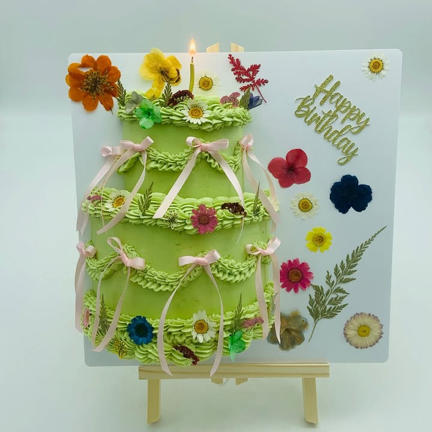
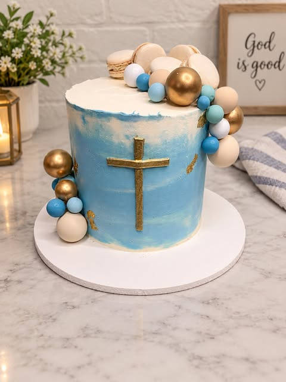
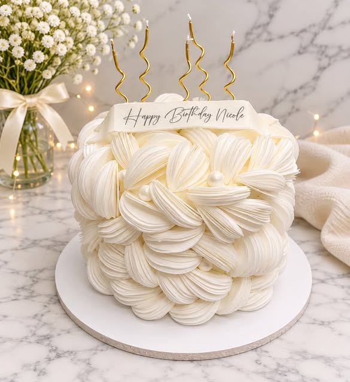
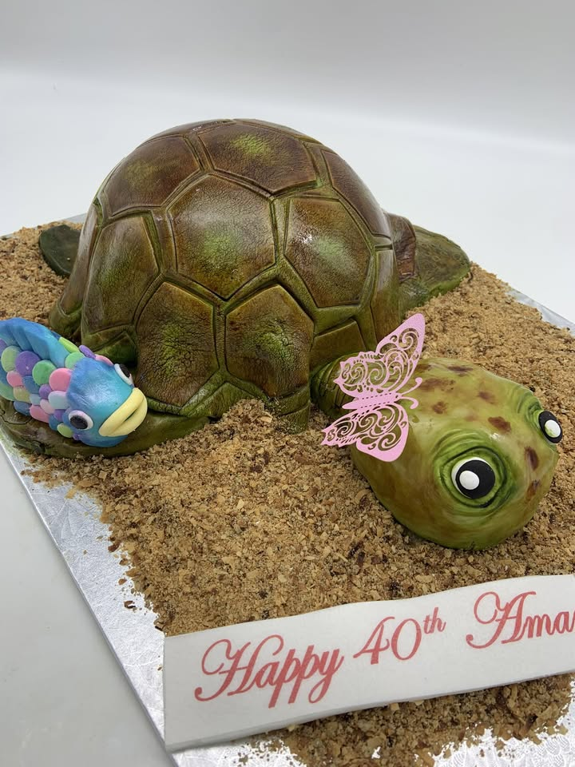
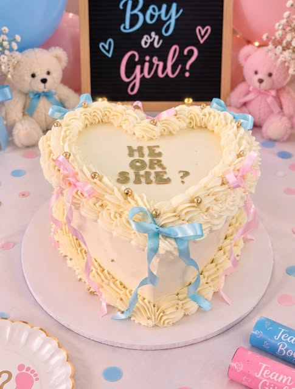
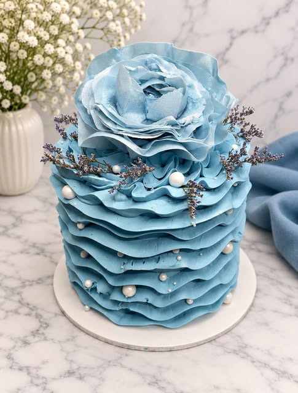
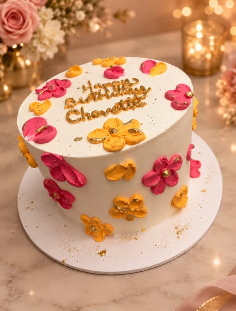
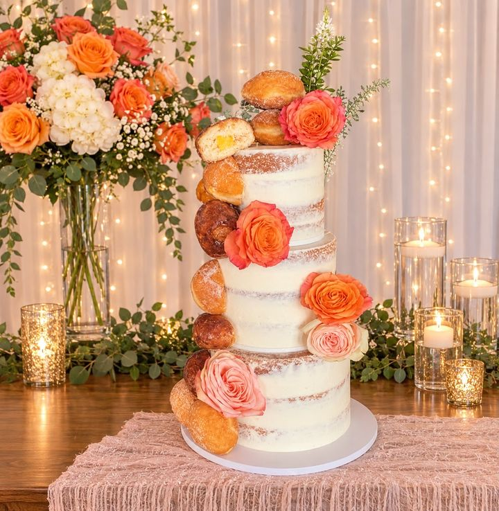
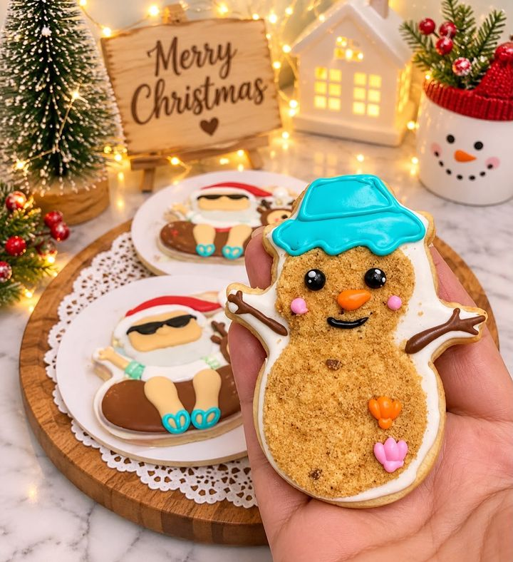

You dream it;
We make it
Adele rarely bakes the same cake twice. Birthdays, christenings, weddings, graduations and Christmas treats, each one designed for its day and baked to order in Discovery Bay, Providenciales.
Plan your cakeTwo decadeson the island







Every cake, a one-off
A few from the last weeks. Her Instagram holds more than 3,500 posts, and you will struggle to find two cakes alike.
Birthday
First birthdays to fortieths: sculpted, piped, braided or crowned with fruit, and the parties around them, like gender reveals.
Christening
Soft blues and blush pinks, gold crosses, sugar flowers and cookies to match.
Weddings
Tiered and designed with you, from garden parties to villas by the sea.

Wedding cakes start from $500, depending on the design. Tell Adele your date, your colours and how many guests, and she will plan it with you.
Ask about your wedding cakeChristmas
Handcrafted sugar cookies, cupcakes and cakes for the season, island style.
Order Christmas cookiesA little Christmas magic, made by hand and baked with love. My daughter, Alicia, joins me in the kitchen each Christmas to create our beautiful, handcrafted sugar cookies — each one a little work of art.

Graduation
From the first day of school to the class of 2025: caps, diplomas and the school colours.
From a message to your cake
Ask
Send Adele the date, the number of guests and a picture or two of what you love, on WhatsApp or by phone.
Baked
She designs it and bakes it in-house, to order. Give her one to two weeks, and up to three for very detailed cakes.
Yours
Collect it in Discovery Bay at the day and time you agreed, or have it delivered for an extra charge.
Plan your cake
Choose the day and the look, write the message, and send it all to Adele in one WhatsApp.
By The Dozen
Cupcakes, brownies and cookies for parties, offices, christenings and boat days, from $40 a dozen.
Cupcakes from $40
Decorated to match the cake, or on their own. The price depends on the design.
Brownies from $40
For school parties, offices and boat days. The price depends on the ingredients.
Cookies from $40
Iced with names, numbers or your theme, and sugar cookies at Christmas. The price depends on the icing.
What cakes cost
Cakes
Sculpted, tiered and very detailed cakes cost more.
Depending on the design.
Getting it there
Please specify your preferred pickup day and time. Kindly note that any early morning pickups must be arranged and placed the day before.
All deliveries are charged.
All prices quoted are starting prices (“from”) and may vary depending on the design, size, detail and customization required. They are not fixed or final totals.
Like one of these?
Navy and gold
An agate sail, gold spheres and a gold topper
Blush and dried flowers
Roses, pampas and a palm spear
From South Africa to Provo
Adele van Schoor left her native South Africa for Providenciales two decades ago. What started as elaborate birthday cakes for her own kids became The Cake Lady, her private bakery in Discovery Bay.
From bespoke celebrations to celebrity occasions, our creations have been commissioned for high-profile names including Kylie Jenner, Kendall Jenner and Cardi B.
Every cake is made in-house, so you will not find them on a supermarket shelf. She bakes for families who live here and for visitors celebrating on the islands, and the calendar stays busy all year.
Baked for
birthday parties · first birthdays · christenings · baby showers · gender reveals · weddings · graduations · anniversaries · Christmas · and any of life's other memorable moments
On Instagram, 3,516 posts and 2,343 followers. On Facebook, 1,174 followers. And two decades on the island.
Had one of Adele's cakes? A review helps the next family find her.
Before you order
TimingHow far ahead should I order?
One to two weeks before your event. Very detailed cakes can take up to three weeks, and Adele is busy all year, so the earlier you ask, the better.
PickupWhere do I collect my cake?
From Adele's home bakery in Discovery Bay, Providenciales. Please specify your preferred pickup day and time. Kindly note that any early morning pickups must be arranged and placed the day before.
DeliveryCan you deliver it?
Yes. All deliveries are charged, and Adele confirms the cost when you order.
DietDo you make gluten-free, vegan or nut-free cakes?
Yes, all three, on request. Mention it when you order so Adele can plan the recipe.
DesignCan I send a picture of what I want?
Please do: a photo you love, your party colours, a theme or a name. Adele rarely makes the same cake twice, so yours will be made for your day.
VisitingI'm on holiday here. Can I still order?
Yes. Adele bakes for visitors as well as residents. Send her your dates and where you are staying, and plan pickup or delivery together.